ThermalRaster
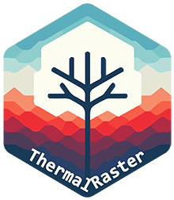
Package description
ThermalRaster package is designed to enhance the processing and analysis of FLIR thermal and RGB images. It offers a comprehensive suite of functions for extracting, processing, and visualizing thermal data embedded within the metadata of FLIR images. Key features also include retrieving full and cropped RGB images. Imagery is returned as SpatRaster objects compatible with the terra package, enabling to profit from this package features/toolkit.
Using the overlap between low-resolution thermal imagery with high-resolution RGB images, the package enables the creation of synthetic or predicted thermal images for either cropped or full RGB images. This is achieved through the application of the Random Forest algorithm (via the ranger package) or Deep Learning methodologies (utilizing keras/tensorflow).
The package also enables the handling of JSON annotations/masks from Roboflow (https://roboflow.com), enabling the extraction of ROIs from the images for further analysis, making possible to assess, plot, analyze and model fine-scale thermal variation in micro-habitats (i.e., TReMs - Tree Related Micro-habitats). Roboflow’s advantages include improved ROI digitization using manual or the SAM (Facebook’s Segment Anything) algorithm. ROIs can also be generated with the terra package as SpatVector objects.
EXIFtool (https://exiftool.org/) is broadly used for retrieving metadata from FLIR imagery and the ThermImage package to convert from raw to temperature.
Here we will show some examples of processing FLIR ONE Edge Pro imagery that are provided as samples in the package:
Working with RGB imagery
library(ThermalRaster)
library(terra)
library(dplyr)
library(ggplot2)
# Image path in sample data
image_path <- system.file("extdata", "BEECH1_EINBRGB_IPUQ4327.JPG", package = "ThermalRaster")
# Provide here the folder path where the EXIFtool executale is
# NOTE: The executable must be named exiftool
exiftool_path = "C:/MyFiles/R-dev/Giant_Trees"Plot the FLIR image thumbnail as it is captured by the FLIR camera:
thumb <- flir_thumbnail_to_rast(image_path)
plotRGB(thumb)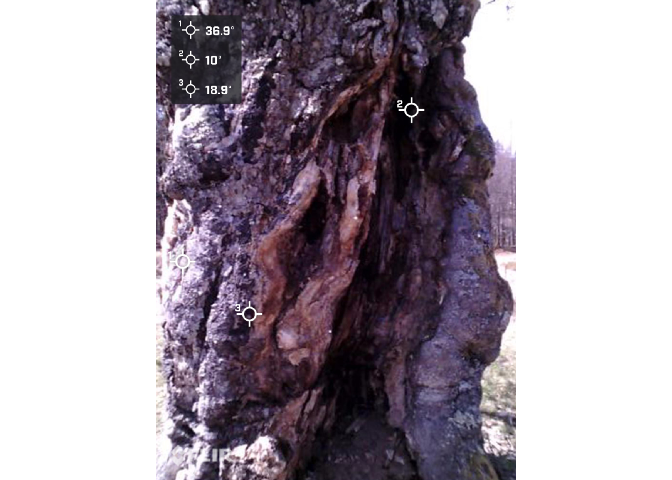
Now let’s check the full RGB image that is contained in FLIR’s metadata:
rgb_hr <- flir_rgb_to_rast(image_path, exiftool_path, crop = FALSE)
print(rgb_hr)## class : SpatRaster
## dimensions : 1440, 1080, 3 (nrow, ncol, nlyr)
## resolution : 1, 1 (x, y)
## extent : 0, 1080, 0, 1440 (xmin, xmax, ymin, ymax)
## coord. ref. :
## source(s) : memory
## names : red, green, blue
## min values : 0, 0, 0
## max values : 255, 255, 255
plotRGB(rgb_hr, main = "Full RGB (1440x1080")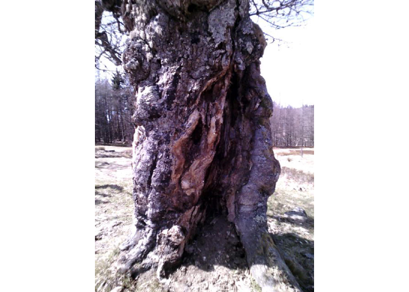
And now the cropped RGB which matches the size and resolution of thermal image (i.e., 640x480):
rgb_lr <- flir_rgb_to_rast(image_path, exiftool_path, crop = TRUE)
plotRGB(rgb_lr, main = "Cropped RGB (640x480)")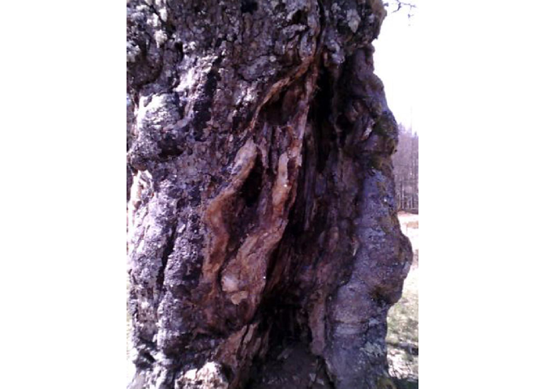
We can see that the second image is narrower and closer to the tree trunk (focus target).
Working with thermal data
Start by extracting the thermal data (in degrees Celsius):
temp <- flir_raw_to_thermal(image_path, exiftool_path)
print(temp)## class : SpatRaster
## dimensions : 640, 480, 1 (nrow, ncol, nlyr)
## resolution : 1, 1 (x, y)
## extent : 0, 480, 0, 640 (xmin, xmax, ymin, ymax)
## coord. ref. :
## source(s) : memory
## name : lyr.1
## min value : -30.02469
## max value : 42.08388
summary(temp)## Warning: [summary] used a sample
## lyr.1
## Min. :-30.02
## 1st Qu.: 12.16
## Median : 14.87
## Mean : 15.00
## 3rd Qu.: 18.33
## Max. : 42.08
par(mfrow=c(1, 2))
plot_temp_rast(temp, palette = "magma", main = "Thermal cropped")
plotRGB(rgb_lr, main = "RGB cropped")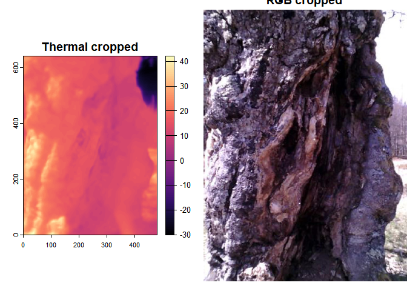
Now let’s remove outliers in the thermal image that seem to more frequently occur for the lower portion of the temperature distribution values and plot again.
We will convert values lower than the 3.5% percentile to NA and keep all the remaining values of the upper part of the distribution unchanged.
temp_out_rm <- remove_outliers(temp, pmin = 3.5, pmax = 100)
plot_temp_rast(temp_out_rm, palette = "magma")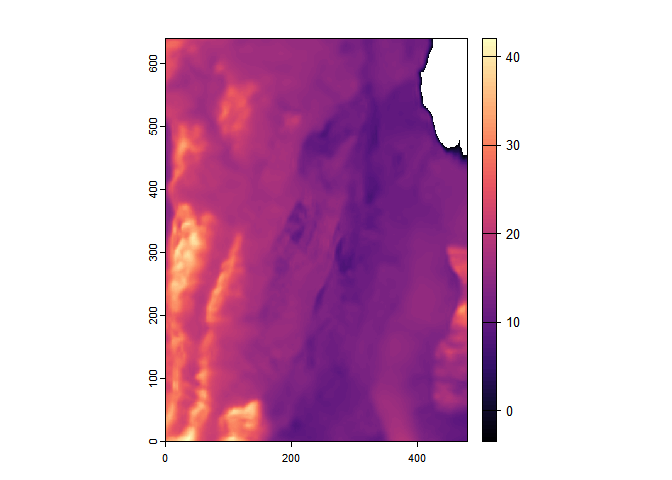
By removing outliers temperature gradients in the tree surface and micro-habitats such as cavities are highlighted.
Let’s test different color palette to plot the image:
plot_temp_rast(temp_out_rm, palette="Spectral")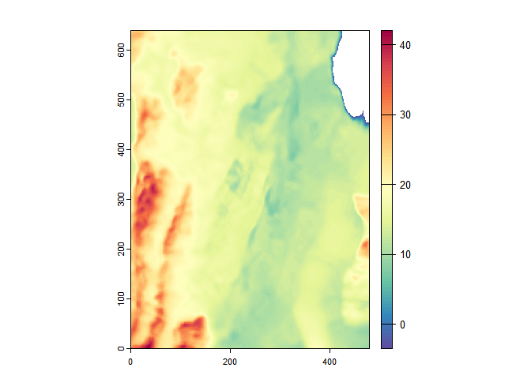
Generating synthetic or predicted thermal images
The ThermalRaster package currently provides methods to generate synthetic or predicted thermal data. This enables to gain more detail into the fine-scale variation of surface temperature for inspecting/visualizing structures and micro-habitats.
To achieve this, we use the overlap between the “low-resolution” thermal imagery — i.e., as the target or response variable — with the “high-resolution” RGB cropped image — i.e., predictors or features, based on color and texture — to train a Random Forest or Deep Learning model.
Because generalization across images is highly “challenging”, to implement these methods we need to train the model every time. This also means different levels of performance or success depending on the objects depicted in the images.
After training, the model it can be applied onto the images used for training — i.e., the “low-resolution” or cropped RGB images — and also the full RGB image both extracted from the FLIR’s metadata.
Keep in mind that synthetic/predicted thermal data for the full RGB has limitations since the train region may not include features in this image.
rf_sup_res <- rf_thermal_from_rgb(
rgb_rst = rgb_lr, # The predictors from cropped/low-res RGB
temp_rst = temp, # The target thermal image
rgb_high_res = rgb_hr, # The full RGB image
npix = 30000, # Number of sample pixels used for training
rm_cor = FALSE, # Remove predictors through correlation
rm_cor_thresh = 0.98, # Correlation threshold; used if rm_cor = TRUE
get_rf_model = TRUE, # Get the RF model in the output object
verbose = TRUE, # Print progress messages?
scale_data = FALSE) # Scale the data before model training?## |-> Calculating features ...
## Done.
##
## |-> Extracting sample data for training ...
## Done.
##
## |-> Training Random Forest model ...
## Done.
##
## |-> Super-resolving the thermal image ...
## |-> Calculating features for the high-resolution RGB image ...
## Done.
##
## Predicting.. Progress: 75%. Estimated remaining time: 10 seconds.
## Done.
## [Run Time: 2 minutes 37 seconds ]Let’s check the RF model output:
print(rf_sup_res$rf_mod)## Ranger result
##
## Call:
## ranger::ranger(temp ~ ., data = samp_rstdf)
##
## Type: Regression
## Number of trees: 500
## Sample size: 30000
## Number of independent variables: 29
## Mtry: 5
## Target node size: 5
## Variable importance mode: none
## Splitrule: variance
## OOB prediction error (MSE): 22.89146
## R squared (OOB): 0.7085754Now, let’s plot the predicted image considering the train/cropped RGB (with outliers removed: < 3.5% percentile):
pred_term_train_outlrm <- remove_outliers(rf_sup_res$pred_temp_train, pmin = 3.5)
par(mfrow=c(1, 3))
plotRGB(rgb_lr, main="Cropped RGB image")
plot_temp_rast(temp_out_rm, palette="magma", main="Thermal train data")
plot_temp_rast(pred_term_train_outlrm, palette = "magma", main="Synthetic/predicted thermal")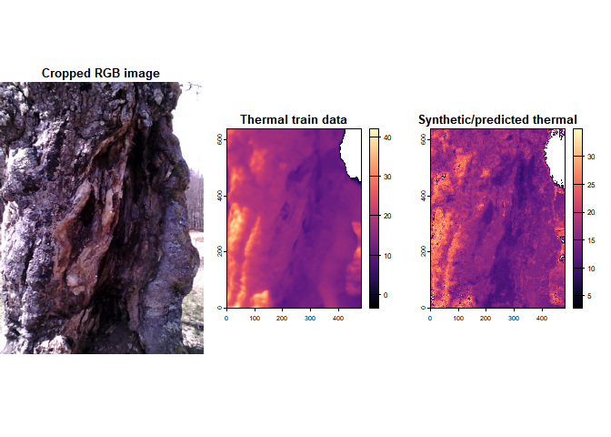
And now, using the full RGB to generate the “synthetic”/predicted thermal image (also w/ outliers removed):
# Remove outliers
pred_term_full_outlrm <- remove_outliers(rf_sup_res$pred_temp_rgb_hr, pmin = 7.5)
par(mfrow=c(1, 2))
plotRGB(rgb_hr, main="Full RGB image")
plot_temp_rast(pred_term_full_outlrm, palette = "magma", main="Synthetic/predicted thermal")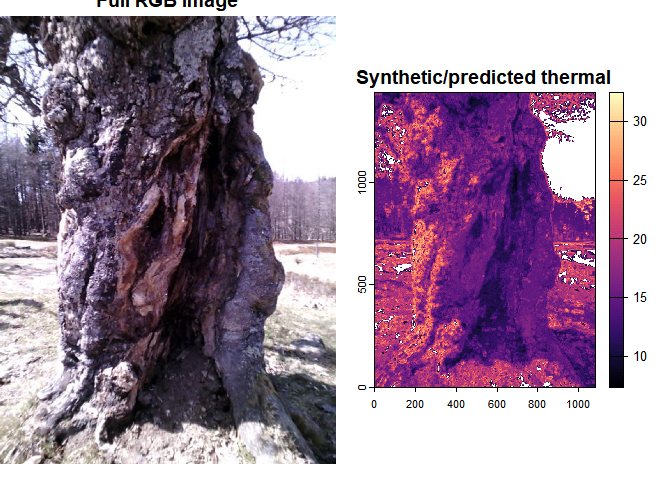
Notice how the RF model can reasonably predict the temperature of pixels fully outside of the training sample/conditions!
Working with regions-of-interest ROIs
Basically there are two ways to currently
Drawing ROIs with the terra package
The objective of this demo is to check the distribution of temperature values between different micro-habitats in the tree bole (the bark and one cavity). To do this we will draw a ROI geometry for each.
To draw an ROI we will use the draw function from the terra package. This function allows drawing on a plot to get a SpatVector (points, lines or polygons) or SpatExtent object for later use. After calling the function, start clicking on the cropped RGB image (since this one overlaps with thermal, i.e. same number of columns/rows) to draw the selected geometry. When you are done, press ESC or select “Stop”. You can also preset the maximum number of clicks.
Let’s start by loading the train image:
# Image path in sample data
querc_image_path <- system.file("extdata", "QUEROB1_EINBRGB_BWWG4662.JPG", package = "ThermalRaster")
querc_rgb <- flir_rgb_to_rast(querc_image_path, exiftool_path, crop=TRUE)
querc_temp <- flir_raw_to_thermal(querc_image_path, exiftool_path)
names(querc_temp) <- "temp_c"
par(mfrow=c(1, 2))
plotRGB(querc_rgb, main="RGB cropped")
plot_temp_rast(querc_temp, palette = "magma", main="Thermal - oak tree")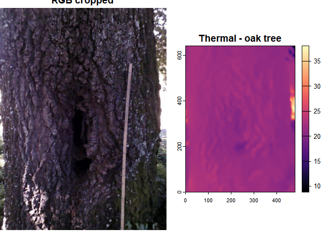
Start a new plotting device (useful to avoid issues with draw when using RStudio) and then draw the ROI. The vertices coordinates will be saved in each object.
Because the drawing is interactive, for the purpose of this explanation we will use a cached version of the ROIs stored in a GeoJSON file previously generated and available in the sample data for ThermalRaster package.
# Start a new plotting device without RStudio graphics device
dev.new(noRStudioGD = TRUE)
# Plot the RGB image, in this case the cropped one which matches the thermal image
plotRGB(querc_rgb)
# Draw polygons and attribute a type
bole_s1 <- draw("polygon", id = FALSE, xpd = FALSE, col = "red")
bole_s1$type <- "bark"
bole_s2 <- draw("polygon", id = FALSE, xpd = FALSE, col = "blue")
bole_s2$type <- "cavity"
# Join the polygon ROIs
tree_samps <- bole_s1 + bole_s2
#(Write data to later reuse)
# writeVector(tree_samps, filename = "./inst/extdata/QUEROB1_EINBRGB_BWWG4662_ROIs_bole.json",
# overwrite = TRUE)Now let’s compare the distribution of temperature values for the bark and the cavity for an oak tree:
geojson_file <- system.file("extdata", "QUEROB1_EINBRGB_BWWG4662_ROIs_bole.json",
package = "ThermalRaster")
tree_samps <- vect(geojson_file)
crs(tree_samps) <- NA
par(mfrow=c(1,2))
plotRGB(querc_rgb)
plot(tree_samps, col=c("red","blue"), legend=TRUE, alpha=0.3, add=TRUE)
legend("topleft", legend = tree_samps$type, pch = 20, xpd=NA, bg="white",
col=c("red","blue"))
plot_temp_rast(querc_temp, palette = "magma", main="Thermal")
plot(tree_samps, add=TRUE)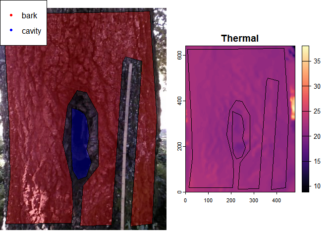
# Create a dataframe with the polygon sequential ID and its type
tree_samps_df <- data.frame(ID = 1:length(tree_samps),
type = tree_samps$type)
# Extract the values for each ROI and then
# Join the temp values with its type using
ext_values <- extract(querc_temp, tree_samps) %>%
left_join(tree_samps_df, by="ID")
ext_values %>%
na.omit %>%
group_by(`type`) %>%
summarise(mean = median(temp_c), std=sd(temp_c)) %>%
knitr::kable(digits=2, col.names=c("Type","Mean","Std.-dev."),
caption="Average and std-deviation of temperature values (deg.C)")| Type | Mean | Std.-dev. |
|---|---|---|
| bark | 21.59 | 0.59 |
| cavity | 20.47 | 0.61 |
Average and std-deviation of temperature values (deg.C)
Now let’s use a different image, this time for a beech tree:
beech_image_path <- system.file("extdata", "BEECH1_EOUTTREERGB_ILAC9031.JPG", package = "ThermalRaster")
beech_rgb <- flir_rgb_to_rast(beech_image_path, exiftool_path, crop=TRUE)
beech_temp <- flir_raw_to_thermal(beech_image_path, exiftool_path)
names(beech_temp) <- "temp_c"
beech_geojson_file <- system.file("extdata", "BEECH1_EOUTTREERGB_ILAC9031_ROIs_bole.json",
package = "ThermalRaster")
beech_tree_samps <- vect(beech_geojson_file)
crs(beech_tree_samps) <- NA
par(mfrow=c(1,2))
plotRGB(beech_rgb)
plot(beech_tree_samps, col=c("red","blue"), legend=TRUE, alpha=0.3, add=TRUE)
legend("topleft", legend = beech_tree_samps$type, pch = 20, xpd=NA, bg="white",
col=c("red","blue"))
plot_temp_rast(beech_temp, palette = "magma", main="Thermal")
plot(beech_tree_samps, add=TRUE)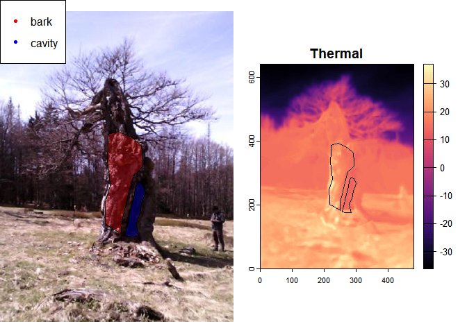
# Create a dataframe with the polygon sequential ID and its type
tree_samps_df <- data.frame(ID = 1:length(beech_tree_samps),
type = beech_tree_samps$type)
# Extract the values for each ROI and then
# Join the temp values with its type using
beech_ext_values <- extract(beech_temp, beech_tree_samps) %>%
left_join(tree_samps_df, by="ID")
# Summarise values
beech_ext_values %>%
na.omit %>%
group_by(`type`) %>%
summarise(mean = median(temp_c), std=sd(temp_c)) %>%
knitr::kable(digits=2, col.names=c("Type","Mean","Std.-dev."),
caption="Average and std-deviation of temperature values (deg.C)")| Type | Mean | Std.-dev. |
|---|---|---|
| bark | 19.30 | 4.25 |
| cavity | 13.96 | 3.10 |
Average and std-deviation of temperature values (deg.C)
Now, let’s make a plot comparing the distributions of the two micro-habitats - check for potential multimodality and differences on the medians:
g1 <- ggplot(ext_values, aes(x=temp_c, fill=type)) +
geom_density(alpha=0.5) +
xlab(expression("Temperature " ( degree*C))) +
ylab("Density") +
theme_bw() +
labs(title = "Oak") +
theme(text=element_text(size=16))
plot(g1)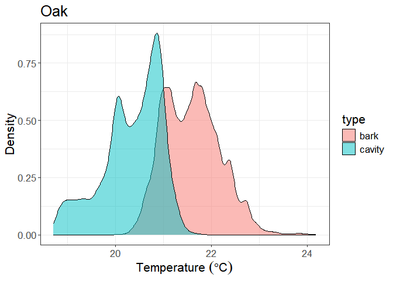
The same plot but this time for the beech:
g2 <- ggplot(beech_ext_values, aes(x=temp_c, fill=type)) +
geom_density(alpha=0.5) +
labs(title = "Beech") +
xlab(expression("Temperature " ( degree*C))) +
ylab("Density") +
theme_bw() +
theme(text=element_text(size=16))
plot(g2)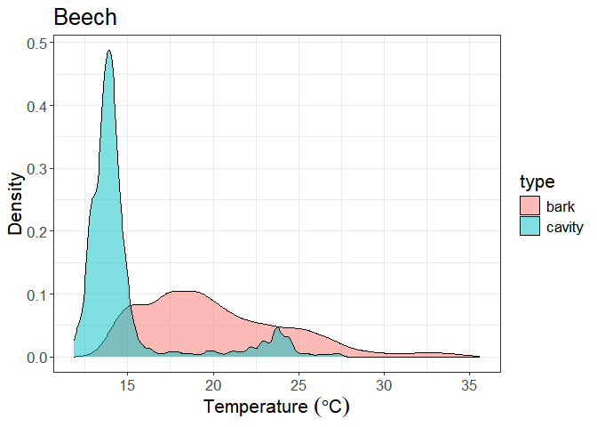
Drawing ROIs with the Roboflow
Roboflow is a development platform that simplifies the process of building and deploying computer vision models. It offers a range of tools designed to assist developers in preparing, creating, and managing datasets needed for training machine learning models, with a particular emphasis on image recognition tasks.
In this context we will use Roboflow’s features to generate ROI’s of micro-habitats to showcase its main functions. A tutorial/vignette on this issue is provided here with much more details on how to collect ROI’s using Roboflow.
In a nutshell, there are two main ways of making ROI’s in Roboflow:
-
“Smart Polygon” – This is a semi-automatic tool based on SAM (Facebook’s Segment Anything Model) which can retrieve object boundaries easily, sometimes with a single click. Use one click to add one point inside the area you want to be on the polygon mask. If new points are added within the initial area, that area will be removed. Conversely, if a point is placed outside the existing area, the algorithm will try to expand the object the best way possible by context, spectral and textural similarity.
-
Another available option is the fully manual “Polygon Tool”, which gives complete control to the user for drawing a polygon to delineate the mask.
ℹ️ Note: polygons cannot have “holes” or “islands”. This set of tools for annotation in Roboflow app cannot handle such representations.
Roboflow annotations are recorded into a specific JSON format. ThermalRaster can use these data stored as JSON files and convert them into sf objects compatible with raster data from the terra package.
# Roboflow sample data
robo_rois_path <- system.file("extdata", "EINBRGB_IPUQ4327.json",
package = "ThermalRaster")
# JSON data loaded from a Roboflow json file
json <- jsonlite::fromJSON(robo_rois_path)
print(json$boxes[,1:6])## type label x y width height
## 1 polygon cavity 646.8750 831.7969 455.6250 1213.5938
## 2 polygon bole 532.9688 720.0000 1054.6875 1440.0000To convert Roboflow annotations into sf polygons actually usable with ThermalRaster is simple. In this example, the ROIs were collected in Roboflow from FLIR’s thumbnail image — which has a size of 1440 x 1080 pixels — however, we want to convert those annotations into the dimensions of the thermal image (which is 640 x 480) hence with a scale factor of 2.25 (i.e., f = 1440 / 640). In the first step (get_roboflow_masks) we generate all the masks from the JSON file and, in the second simplify_roboflow_masks, we aggregate/simplify the masks by label/category.
robo_masks <- get_roboflow_masks(path = robo_rois_path,
rst_height = 640,
rst_width = 480,
geom_rescale = 2.25)
robo_masks_simple <- simplify_roboflow_masks(robo_masks)
print(robo_masks_simple)## $labs
## [1] "cavity" "bole"
##
## $pol_masks
## $pol_masks[[1]]
## class : SpatVector
## geometry : polygons
## dimensions : 1, 1 (geometries, attributes)
## extent : 187, 389, 1, 540 (xmin, xmax, ymin, ymax)
## coord. ref. :
## names : layer
## type : <int>
## values : 1
##
## $pol_masks[[2]]
## class : SpatVector
## geometry : polygons
## dimensions : 1, 1 (geometries, attributes)
## extent : 3, 471, 0, 640 (xmin, xmax, ymin, ymax)
## coord. ref. :
## names : layer
## type : <int>
## values : 1
##
##
## $rst_masks
## $rst_masks[[1]]
## class : SpatRaster
## dimensions : 640, 480, 1 (nrow, ncol, nlyr)
## resolution : 1, 1 (x, y)
## extent : 0, 480, 0, 640 (xmin, xmax, ymin, ymax)
## coord. ref. :
## source(s) : memory
## name : layer
## min value : 1
## max value : 1
##
## $rst_masks[[2]]
## class : SpatRaster
## dimensions : 640, 480, 1 (nrow, ncol, nlyr)
## resolution : 1, 1 (x, y)
## extent : 0, 480, 0, 640 (xmin, xmax, ymin, ymax)
## coord. ref. :
## source(s) : memory
## name : layer
## min value : 1
## max value : 1ℹ️ Note: Re-scaling annotations is not needed if the size of the RGB and thermal images is exactly the same (which happens for “cropped” images as shown in the examples before).
The output of is a list containing three elements:
labswith the labels of the ROI polygons,pol_maskswith the ROIs asSpatVectorpolygon objects, andrst_maskswith the ROIs asSpatRaster.
After applying the simplyfying step we get a list similar in structure to the input but with all masks of the same label aggregated together. Each label will correspond to a single polygon mask and a single raster mask for each category, with the latter indicating presence (1 or TRUE) or absence (NA) of the label at each pixel.
plotRGB(rgb_lr)
plot(robo_masks_simple$rst_masks[[1]], col="blue", alpha=0.3,
add=TRUE, legend=FALSE)
legend("topright", legend = "cavity", pch = 20, xpd=NA, bg="white",
col=c("blue"))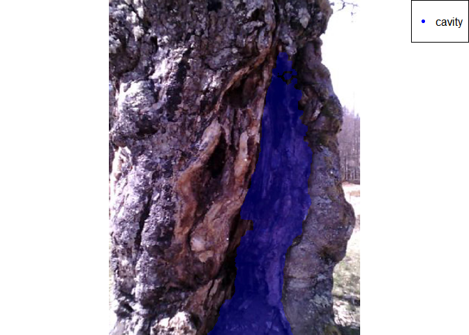